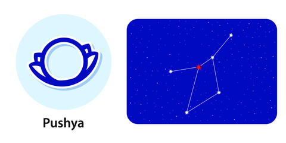

Nakshatra Pushya
Pushya Nakshatra
Characteristics male
Male natives born in Pushya Nakshatra are old school romantics with a hidden emotional character that debars them from making tough life decisions. These people find it tough to leave someone and thus are loyal lovers. These people also struggle at making tough changes in life. The emotional nature of these natives, however, also makes them kind-hearted. This native is always in the mood to please himself and hence, can be selfish about it. The Pushya male has a chosen few friends and doesn't pay much heed to people beyond that circle. Praise inflates his ego, while criticism deflates it. The soft nature of these individuals makes them malleable to falling into the wrong company. Hence, males born in Pushya Nakshatra must be very careful about who they forge bonds with, be it personal or professional.Profession male
The male born in Pushya Nakshatra has a will to take up any job. These people want to show the world that they can do anything and everything and thus take on tasks whether or not they are capable of handling them. Yet, having too much work under their selves make them stressed and uninterested in other commitments in life. Also, as these males are emotional beings, even a little criticism about their work can make them sad. These natives, however, don't like to leave any task in between if they have once committed themselves to it. Aka, the male born in Pushya Nakshatra is born with strong willpower and overcomes difficult obstacles to reach his goals.Compatibility male
The male born in Pushya Nakshatra is more inclined towards his family, or say, is dependent on them for a large part of his life. Even if you are earning well, still you will get help from your family whenever you need it. Often, the arrival of even the smallest problem in life activates the panic mode in males born in Pushya Nakshatra. Thereafter, they don't even think once before ghosting every relation in life until their problem is solved.Health male
The male born in Pushya Nakshatra may have to face health problems right from birth till the age of 15. If you cross the age successfully, you will relatively live a disease-free life. However, try to not be lazy about things in life.Characteristics female
The female born in Pushya Nakshatra may have a tough time finding peace for herself, owing to her busy schedule throughout her life. The female is too gentle, which is a quality of hers that people tend to use against her. As someone born in Pushya Nakshatra, you may have experienced instances when you gave someone all of yours and got nothing or even misery in return from them. Yet, despite the odds, the female born in Pushya Nakshatra believes in the plan of the lord and is a religious kind. She has an appetite for following family rituals and does everything from her whole heart. The sexual nature is one of your cherished qualities but make sure you don't use it for the wrong reasons.Profession female
The female born in Pushya Nakshatra is a smart investor. This woman has the capability of handling her money well. You may get good returns by investing in land, buildings and estate. In the professional world too, the female born in Pushya Nakshatra rises to fame and important positions faster than anyone else. Many may quote your looks as the reason behind the quick promotions, but you may give the credit to the sharp mind and intellect thinking that you get from being born in Pushya Nakshatra.Compatibility female
The female born in Pushya Nakshatra has less time for family matters and thus may struggle at forging good compatibility with her spouse. In fact, your spouse may even suspect you of cheating in some instances. Thus making space for work-life balance is one thing you must do immediately. The female born in this Nakshatra also struggles from the inability to express herself. Countering this can help you meet more compatible people.Health female
Just like the male native, the female born in Pushya Nakshatra may also have to face health problems till the age of 20. Skin-related problems such as acne and pimples might leave you irritated. Medication, however, is not the cure for these problems, but time.Pushya Nakshatra Padas
1. Pada 1st: The first pada of the Pushya Nakshatra falls in the Leo Navamsa and is ruled by the Sun. The native born in this pada is ushered with achievement, wealth and ancestral pride faster than anyone else.
2. Pada 2nd: The second pada of the Pushya Nakshatra falls in the Virgo Navamsa and is ruled by Mercury. The native born in this pada may have to face health problems. Native born in this pada will have fair complexion and slim body.
3. Pada 3rd: The third pada of the Pushya Nakshatra falls in the Libra Navamsa and is ruled by Venus. The native born in this pada is more inclined towards home, comfort, luxuries and romance. This native tends to become a great life partner.
4. Pada 4th: The fourth pada of the Pushya Nakshatra falls in the Scorpio Navamsa and is ruled by Mars. Natives born in this Nakshatra may have setbacks in their early education due to health problems. Also, your irresponsible behaviour, if not changed, can let you down in life.